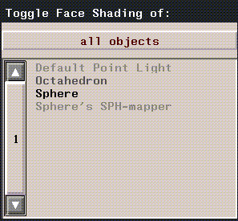

[N-World Contents] [Book Contents] [Prev] [Next] [Index]
Objects and TOD Animations
PlayStation Express gives you the ability to preview objects in textures on the Sony PlayStation as you model them. Seeing your work on the PlayStation at an early stage can help to prevent unpleasant surprises later in the game development process. This chapter shows you how to create, attribute, and preview a simple object on the Sony PlayStation. You can preview TOD animations as well. In many cases, TOD files are a more appropriate (and simpler) animation format choice. TOD files can be created from Geometry objects and texture maps.
Previewing Attributed Objects
Knowing what your objects and texture maps will actually look like on the target platform can save a lot of time and energy during the modeling and attributing process. PlayStation Express lets you see your models and textures in real time on the PlayStation, so you always know what your work will look like in the game.
In this brief tutorial, we'll create an object in N-Geometry, attribute it using the Attributes Editor, then preview it on the Sony PlayStation.
A Note about Tutorial Files
We'll be loading files from N·World demo directories during the course of this tutorial. When N·World is distributed, these directories are generally write-protected. This means that you might not be able to save your materials or other files to these directories. When you are saving objects, materials, or other items, make sure to specify a directory for which you have adequate write permissions (your home directory, symbolized with a tilde (~) is often a good choice). If you have any questions about the configuration of your particular site, consult your System Administrator.
Creating and Attributing an N·World Object
1. In the GeoMenus, (CLICK-L) on New Object>Sphere.
2. (SHIFT-L) on the Sphere, and then (CLICK-L) on Triangulate.
3. In the GeoMenus, (CLICK-L) on New Object>mapper.
- Create a spherical mapper, and set the bounds source for the mapper to your new sphere. Your mapper parameters should look like this:

Figure 2.1 Spherical mapper parameters
4. In the GeoMenus, (CLICK-L) on Shading, then select your object from the menu which appears.

Figure 2.2 Toggling shading for Geometry objects
5. Open the Browser, then (CLICK-L) on the Geo button.
- The Browser shows all the object currently loaded into Geometry, and also provides a visual representation of object hierarchy:
Figure 2.3 The Browser display
6. (CLICK-R) over your object in the Browser display.
- The Operations menu for your sphere appears.
Figure 2.4 The Browser Operations menu for sphere
- Note: If your Browser doesn't show all the objects in the Geometry window, (CLICK-L) on Recompute to refresh the Browser display.
7. (CLICK-L) on Assign Mapper.
- A pop-up menu appears listing the mappers you've created. (CLICK-L) on the spherical mapper you created in step 3.
Figure 2.5 Assigning a mapper using the Browser
- The browser display changes to reflect the mappers new association with your sphere.
Figure 2.6 Mapper associated with an object in the Browser
8. Open the Attributes Editor.
9. (CLICK-L) on New.
- Enter a directory and filename for you new material in the dialog box which appears:
Figure 2.7 Creating a new material
- Icons for your new material appear in the Attributes Editor (Figure 2.8)
Figure 2.8 Sony PSX Render domain attributes editor menu
10. (CLICK-L) on the Sony PSX button.
- This selects the PlayStation domain as the current render domain, and reveals the SonyPSX domain attribute menus (Figure 2.8).
- Note: The SonyPSX domain is specially designed for attributing objects for display on the PlayStation. You should read Chapter 7 and become familiar with SonyPSX attributes and defaults.
11. (CLICK-L) on Texture.
- The Attributes menu will change to reflect PlayStation Texture map attributes.
Figure 2.9 PSX domain texture attributes
12. (CLICK-L) on the Texture Map field, and select the following texture map file:
/usr/local/ngc/presets/maps/Green_snake_B.tpx
13. In the Browser, (CLICK-R) on your sphere.
- The Operations menu appears again.
14. (CLICK-L) on Assign Material.
- A menu appears listing all materials loaded into memory. (CLICK-L) on the material you just created.
Figure 2.10 Assigning a material
- The browser will prompt you to select a mapper for any texture maps associated with the material.

Figure 2.11 Assigning a texture map to a mapper in the Browser
15. (CLICK-R) on the Mapper field, then (CLICK-L) on the Spherical mapper you created in step 3.
- The browser window should now show the sphere and its mapper, as well as the material you just assigned it.
Figure 2.12 The Browser with mapper and material assigned to Sphere
- Note: If you don't see icons for your materials, (CLICK-L) on the Options button at the bottom of the browser, then (CLICK-L) on the Icons toggle.
16. In the Attributes Editor, (CLICK-L) on Redisplay.
- Your sphere should appear in the Geometry window with the green snake scales applied to it. PlayStation materials are displayed in the Geometry window using GL Shade.
Setting up the PC
Before we can send our object to the PlayStation, we need to set up the PC to receive the information.
17. Create a directory for your preview on the PC.
- If <name> is the name of your new directory, type in a command like this at the DOS prompt:
C:\mkdir <name>
18. Change to your new directory
cd c:\<name>
19. Type fs at the DOS prompt.
c:\fs
- This initializes the FTP server on the PC to receive data from the SGI.
20. On the SGI, (CLICK-L) on Preview in the Attributes Editor.
- If you have not already specified the FTP parameters during an earlier preview, or by specifying SonyPSX domain defaults, then the FTP parameters dialog appears:
Figure 2.13 PlayStation Express FTP parameters menu
- Note: If you have any questions about these parameters, consult your System Administrator.
21. Now, (CLICK-L) on Preview in the Attributes Editor.
- PlayStation Express FTP's the data to the PC.
22. Press the ESC key on the PC to exit FTP server mode.
23. Type go at the DOS prompt on the PC.
- Your object should appear on the PlayStation display!!
- Note: The Preview function exports all objects visible in the Geometry window to the Sony PlayStation.
That's all there is to it! Essentially, previewing objects on the Sony PlayStation is no different from ordinary render operations.
Manipulating Objects on the PlayStation
You can use the PlayStation joystick controller to manipulate the objects you're previewing on the Sony PlayStation.
Troubleshooting
If your object doesn't appear on the PlayStation display:
1. Make sure your object has the correct mapper and material assigned to it.
2. Make sure the material assigned to the object is defined in SonyPSX render domain.
3. Make sure that the PlayStation and PC are connected to each other and to the SGI.
4. Make sure that you specified the correct host directory when you FTP'd the information to the PC.
- Note: You may have to (CLICK-L) on the Prefs button to specify a new host directory. See "`SonyPSX Domain Defaults," on page 7-4 for more information about setting SonyPSX domain defaults.
Previewing TOD Animations of Attributed Objects
In this section, we'll show how to animate and object or group of objects, then send that animation to the Sony PlayStation as a TOD animation. Models sent using this method have the following limitations:
Given these restraints, TOD animations are often a good choice for animating complex scenes with "fixed" shapes. Basically, TOD animations are appropriate for animations in which objects do not change shape.
For example, you could animate a plane flying over a city, with propellers turning, or a camera moving along a dark hallway. Textures could be applied to the fuselage of the airplane or the walls in the hallway.
Creating the Animation
Figure 2.14 Creating a TOD animation (with textures)
Create the Objects
1. Create the objects you want to animate in N-Geometry.
- You may assign any Sony domain attributes to the objects, including texture maps.
Animate the Object
2. Create a script in N-Dynamics to animate the object.
- The script can perform any actions that do not change the shape of the object. You may, for example, include channels that move or rotate an object (or the camera), but you cannot apply displacements to that object.
3. Include a Record Animation channel in your script as the last channel in the script.
4. Animate the script.
- (CLICK-L) on the Animate button. You can watch the script as it is animated in the N-Geometry window.
Set up the PC
While N-Dynamics animates the script, we'll configure the PC to receive the data we'll be sending over.
5. Create a directory on the PC to store the preview data.
- If
<name> is a directory name, then type a command like this at a DOS prompt:
c:\mkdir <name>
6. Make the directory you just created the current directory.
- Again, if
<name> is the directory you just created, type a command like this at the DOS prompt:
c:\cd <name>
7. Start the FTP server.
- Type the following at the DOS prompt:
- fs
- Note: This batch file should start the FTP software. If it does not, make sure that you added the FTP directory to your path!!
8. When N-Dynamics completes the script, (CLICK-L) on Export.
- Select PlayStation Preview from the Export menu:
Figure 2.15 Exporting TOD data
9. Choose your FTP Options.
- The default values for these options are specified in the SonyPSX domain defaults.
- Note: You must use FORWARD slashes when delimiting directories, even though you are referring to DOS directories. For example, to make c:\mystuff\animations the Host Directory, you would type /mystuff/animations into the Host Directory field!!
10. (CLICK-L) on Done when you've entered your FTP options.
- PlayStation Express will FTP the data to the PC.
11. After the FTP is complete, hit the ESC key on the PC.
- ESC exits FTP host mode.
Previewing the Animation on the PSX
The files you FTP'd are now on the PC. To view them on the PSX, you must FTP them again, this time from the PC to the PSX.
12. Type the following command at the DOS prompt to FTP the data to the PSX:
go
- Note: If you get a "bad command or filename" error, it's almost certainly because you failed to update your path correctly. See "Modifying your AUTOEXEC.BAT" in the Sony PSX Installation Guide.
13. Your animation should appear on the PSX!!
Write the TOD Animation to Disk
TOD animations are saved directly to disk; because you aren't working with vectors, waves, actions, or subactions, you don't need to open either the Vector Editor or the Action Editor.
Saving your N-Dynamics Script
14. Open N-Dynamics.
15. (CLICK-L) on the File button.
16. (CLICK-L) on File>Save Script.
- For a complete description of how to save scripts, see the N-Dynamics Reference Guide.
Getting Help
If you run into any problems or have any questions, please call Nichimen Graphics Support at (800) 366-4743.
[N-World Contents] [Book Contents] [Prev] [Next] [Index]
 Another fine product from Nichimen documentation!
Another fine product from Nichimen documentation!
Copyright © 1996, Nichimen Graphics Corporation. All rights
reserved.